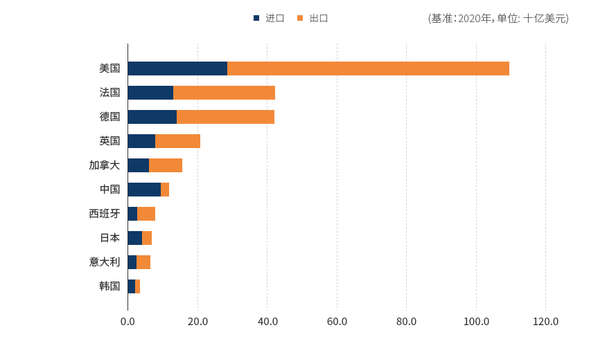
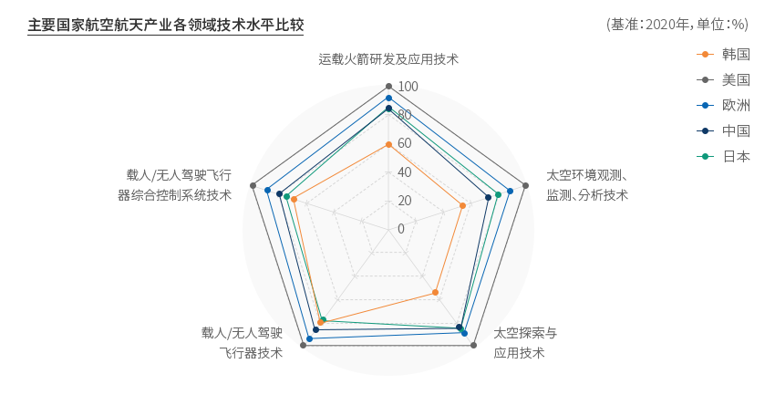
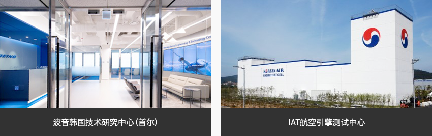
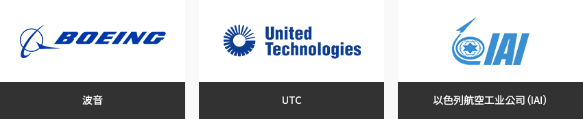
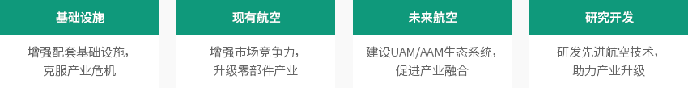
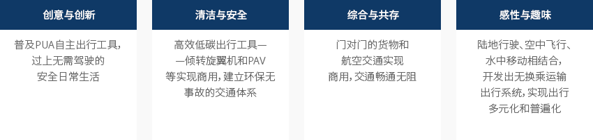
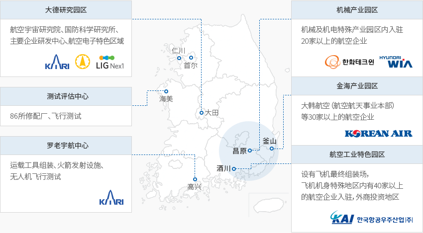
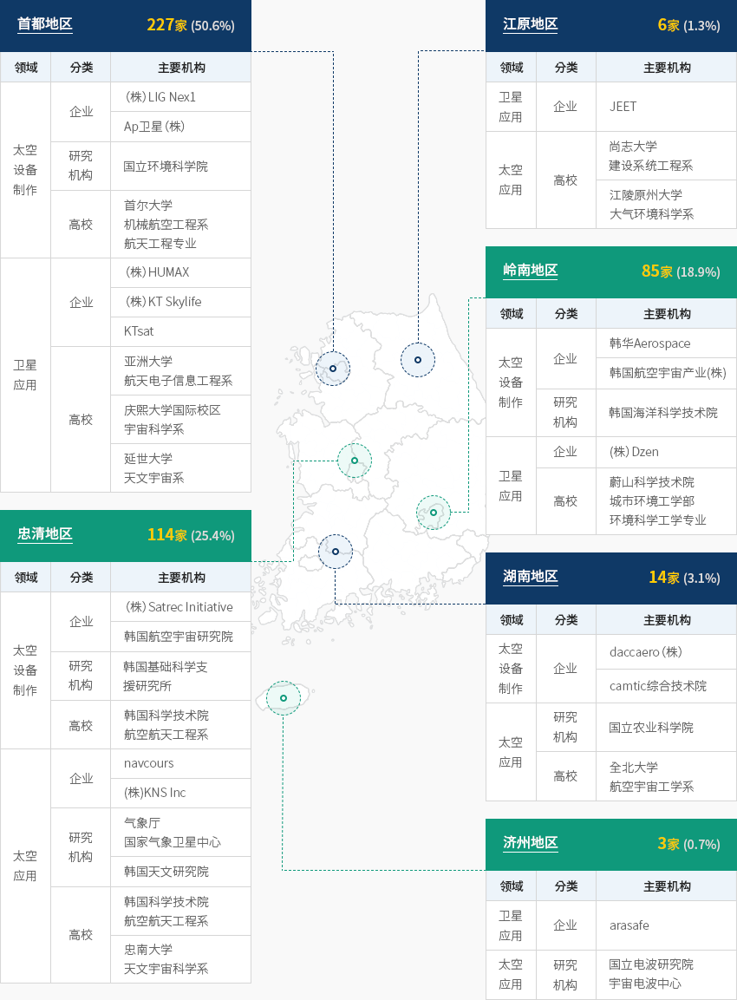

航空航天
- Home
- Why KOREA
- 产业
- 航空航天
-
韩国着力掌握技术 确保进一步腾飞 关闭内容韩国着力掌握技术 确保进一步腾飞新冠肺炎大流行导致全球范围内持续发生经济动荡和社会变化，各国纷纷采取封锁、关闭边境等限制出行措施。
受其影响，2020年主要国家的贸易规模同比减少35%。韩国的经济增长率为-37%，低于平均水平，
但降幅小于较中国（-49%）、日本（-44%）、法国（-43%）。"主要国家航空航天产业贸易规模"(基准：2020年，单位: 十亿美元)- USA
- France
- Germany
- United Kingdom
- Canada
- China
- Spain
- Japan
- Italy
- Repulic of Korea
 ※ 资料来源：联合国贸易数据库（UNComtrade）以2020年为基准，对主要国家核心技术领域的技术水平比较结果显示，与技术水平最高的美国(100%)相比，
※ 资料来源：联合国贸易数据库（UNComtrade）以2020年为基准，对主要国家核心技术领域的技术水平比较结果显示，与技术水平最高的美国(100%)相比，
韩国的技术水平达到64.3%，较2018年上升了3.4个百分点。- "载人/无人驾驶飞行器技术"领域的技术水平从2018年的70.0%提高到2020年的80.0%，上升了10个百分点。
- "载人/无人驾驶飞行器综合控制系统技术"领域的技术水平从2018年的65.0%提高到20020年为70.0%，上升了5个百分点。
韩国的贸易规模虽小于主要国家，但通过重点投资掌握技术实力（占总投资金额的40%左右），
与贸易规模差距（美国的3.5%左右）相比，技术差距相对较小。"韩国主要下游产业现状"主要国家航空航天产业各领域技术水平比较 (基准 : 2020年, 单位 : %)- 运载火箭研发及应用技术
- 太空环境观测、监测、分析技术
- 太空探索与应用技术
- 载人/无人驾驶飞行器技术
- 载人/无人驾驶飞行器综合控制系统技术
※ 资料来源：KISTEP，2020年技术水平评估"民间企业的航空航天产业投资现状"(单位: 百万韩元)民间企业的航空航天产业投资现状 分类, 年度 分类 2017 2018 2019 航空 研发 147,199(37%) 196,194(36%) 184,875(35%) 设施/设备 106,593 174,995 179,876 土地/建筑 88,724 69,839 137,570 其他 51,296 100,586 28,698 小计 393,812 541,614 531,019 航天 研发 163,072(89%) 151,576(84%) 133,760(50%) 设施/设备 17,082 27,422 133,047 土地/建筑 1,196 1,046 1,552 其他 863 21 - 小计 182,212 180,065 268,359 合计 310,271 347,770 799,378 ※ 资料来源：韩国航空宇宙产业振兴协会，《太空产业实态调查》（2020）2019年航空产业民间企业的研发投资达185亿韩元（占整体投资的35%），
投资规模庞大，多年间一直超过30%。对设施和设备领域的投资一直超过20%，专注于技术研发、设施与设备构建。2021年10月21日，基于韩国自主技术的“世界号”运载火箭实验发射后入轨失败，
但达到了目标高度，掌握了75吨级液体发动机和整流罩分离等基础技术。掌握自主发射能力为本土航天领域提前进入“新太空（New Space）时代”奠定了基础，
实际上一共有300多家企业参与了“世界号”的开发。韩国政府以民间主导航天开发为政策基调，由此有望在市场形成方面注入活力，如建设发射服务生态系统等。 -
韩国航空航天产业 创造高附加值 打开内容韩国航空航天产业 创造高附加值2017年以来，韩国的航空航天产业实现持续增长。2019年，航空航天产业的生产值约达到60亿美元，
同比增长28%，出口约为28亿美元，同比增长8%，而气体及引擎零部件、航天、
无人机领域也在均衡增长，生产及出口额均较实现同比上涨。韩国航空航天产业动向 分类, 年度(2010 ~ 2018年) ※ 注1：生产和内需为韩国航空制造行业（KAI、大韩航空、韩华Aerospace等）业绩
※ 注2：进口为MTI统计数据，出口为订单及合同金额。2019年航空产业的从业人数为16637人，截至2016年一直呈增长趋势，2017年以后则维持现状。
2019年航天产业的从业人数为6643人，截至2017年呈大幅增长趋势，此后也维持现状。"航空航天产业雇佣情况"航空航天产业雇佣情况 分类, 年度 分类 2014 2015 2016 2017 2018 2019 航空 从业人数 14,318 14,777 15,986 16,859 16,911 16,637 增长率 - 5.0%p 9.0%p 1.0%p 4.0%p -1.6%p 航天 从业人数 4,257 5,456 5,988 6,708 6,610 6,643 增长率 - 28.0%p 10.0%p 12.0%p -1.0%p 0.5%p ※ 资料来源：产业统计系统，《太空产业实态调查》（2020） -
跨国航空航天企业 在韩建立据点 打开内容跨国航空航天企业 在韩建立据点美国波音（Boeing）公司将在首尔设立世界最大规模的“波音韩国技术研究中心”，
聘用自动飞行、人工智能、航空电子、移动平台、智能机舱、智能工厂领域人才，
研究新一代高新航空航天技术。
此外，波音公司还与大韩航空合作，在仁川自由经济区永宗地区设立航空飞行训练中心，为飞行员进行驾驶培训。
仁川航空技术公司（IAT）由大韩航空和美国联合技术总公司(UTC)合作创办，
在仁川自由经济区永宗地区的航空引擎维修中心进行飞机引擎（B777等）测试。"在韩发展的航空航天业主要跨国企业"
-
通过K-UAM商用 增加航空航天企业发展机会 打开内容通过K-UAM商用 增加航空航天企业发展机会2021年3月，韩国产业通商资源部发布《航空产业发展基础规划（2021～2030）》，
为航空产业发展政策的高效体系化运行，提出了支持方向和政策课题。- 基础设施 - 增强配套基础设施，克服产业危机
- 现有航空 - 增强市场竞争力，升级零部件产业
- 未来航空 - 建设UAM/AAM生态系统，促进产业融合
- 研究开发 - 建设UAM/AAM生态系统，促进产业融合
韩国国土交通部分别从社会、技术、经济、环境、政治等领域展望2045年未来社会，
设定政府向往的四大未来情景，并提出了政策启示。- 创意与创新 - 普及PUA自主出行工具，过上无需驾驶的安全日常生活
- 清洁与安全 - 高效低碳出行工具——倾转旋翼机和PAV等实现商用，建立环保无事故的交通体系
- 综合与共存 - 门对门的货物和航空交通实现商用，交通畅通无阻
- 感性与趣味 - 陆地行驶、空中飞行、水中移动相结合，开发出无换乘运输出行系统，实现出行多元化和普遍化
UAM Team Korea发布《韩国型城市航空交通（K-UAM）应用概念书1.0》，
通过高新交通创新和技术变化，描绘了UAM产业发展的里程碑。"K-UAM各发展阶段的主要指标"K-UAM各发展阶段的主要指标 项目, 起步期(2025年~), 发展期(2030年~), 成熟期(2035年~) 项目 起步期(2025年~) 发展期(2030年~) 成熟期(2035年~) 机长应用 登机 远程遥控 自动控制 交通管理体系 分阶段增加UAM交通管理服务供应商的职责，分阶段减少空中交通管制员的参与 交通管理自动化水平 引入自动化 自动化为主+人工监测 实现完全自动化 走廊运营方式 固定走廊
(Fixed Corridor)固定走廊网
(Fixed Corridor Network)动态走廊网
(Dynamic Corridor Network)航空通信网 商用移动通信(4G/5G)、航空语音通信 商用移动通信(5G·6G)、低轨道卫星通信、C2 LINK等 导航系统 卫星精准导航 卫星精准导航+影像相对导航 综合相对导航 垂直起降机场选址与形式 围绕首都区布局 围绕首都地区和广域地区 全国推广 -
航空航天产业集群及 地区分布情况 打开内容航空航天产业集群及 地区分布情况航空领域的主要企业和测试评估设施大多位于庆尚南道地区。
泗川设有航空产业特色园区，有KAI等主要企业入驻。永川地区则建有航空电子MRO集群。2019年，参与太空产业的机构（包括企业、研究机构、高校）共有449家，
主要分布在首都和忠清地区（341家，75.9%）。制作卫星、运载火箭的太空企业(227家)聚集于首都地区，而忠清地区有
（株）Satrec Initiative等卫星领域主要企业和韩国航空宇宙研究院，
岭南地区则有韩华Aerospace和韩国航空宇宙产业(株)等太空设备制作领域的大企业。"各地区航空产业主要企业及基础设施"- 海美: 测试评估中心(86所修配厂、飞行测试)
- 大田: 大德研究园区(航空宇宙研究院、国防科学研究所、主要企业研发中心、航空电子特色区域)
- 高兴: 罗老宇航中心(运载工具组装、火箭发射设施、无人机飞行测试)
- 昌原: 机械产业园区(机械及机电特殊产业园区内入驻20家以上的航空企业)
- 釜山: 金海产业园区(大韩航空（航空航天事业本部）等30家以上的航空企业)
- 泗川: 航空工业特色园区(设有飞机最终组装场，飞机机身特殊地区内有40家以上的航空企业入驻，外商投资地区)
※ 资料来源：韩国航空宇宙产业振兴协会"航天工业各地区主要企业及基础设施"-
首都地区 227家(50.6%)
航天工业各地区主要企业及基础设施 领域, 分类, 主要机构 领域 分类 主要机构 太空设备制作 企业 （株）LIG Nex1 Ap卫星（株） 研究机构 国立环境科学院 高校 首尔大学机械航空工程系航天工程专业 卫星应用 企业 （株）HUMAX （株）KT Skylife KTsat 高校 亚洲大学航天电子信息工程系 庆熙大学国际校区宇宙科学系 延世大学天文宇宙系 -
江原地区 6家(1.3%)
航天工业各地区主要企业及基础设施(江原地区) 领域, 分类, 主要机构 领域 分类 主要机构 卫星应用 企业 JEET 太空应用 高校 尚志大学建设系统工程系 江陵原州大学大气环境科学系 -
忠清地区 114家(25.4%)
航天工业各地区主要企业及基础设施(忠清地区) 领域, 分类, 主要机构 领域 分类 主要机构 太空设备制作 企业 （株）Satrec Initiative 韩国航空宇宙研究院 研究机构 韩国基础科学支援研究所 高校 韩国科学技术院航空航天工程系 太空应用 企业 navcours （株）KNS Inc 研究机构 气象厅国家气象卫星中心 韩国天文研究院 高校 韩国科学技术院航空航天工程系 忠南大学天文宇宙科学系 -
岭南地区 85家(18.9%)
航天工业各地区主要企业及基础设施(岭南地区) 领域, 分类, 主要机构 太空设备制作 企业 韩华Aerospace 韩国航空宇宙产业(株) 研究机构 韩国海洋科学技术院 卫星应用 企业 （株）Dzen 高校 蔚山科学技术院城市环境工学部环境科学工学专业 -
湖南地区 14家(3.1%)
航天工业各地区主要企业及基础设施(湖南地区) 领域, 分类, 主要机构 领域 分类 主要机构 太空设备制作 企业 daccaero（株） camtic综合技术院 太空应用 研究机构 国立农业科学院 高校 全北大学航空宇宙工学系 -
济州地区 2家(0.6%)
航天工业各地区主要企业及基础设施(济州地区) 领域, 分类, 主要机构 领域 分类 主要机构 卫星应用 企业 arasafe 太空应用 研究机构 国立电波研究院宇宙电波中心
※ 资料来源：《太空产业实态调查》（2020)
※ 资料协助：韩国航空宇宙研究院


Invest KOREA
航空宇宙项目经理
鄭寶英
基干产业引进组
T.+82-2-3460-7888
选址信息推荐
产业园区信息
[Gyeongsangnam-do Sacheon City] Sacheon 1st General Industrial
Complex
Click [Go to Detailed Information] to go to the relevant information screen of
Smart K-Factory service of Industrial Complex Corporation.
-
Complex nameSacheon 1st General Industrial Complex
-
Initial designation date1991.12.28
-
Designated area(m2)2,545,259
-
ManagementGyeongsangnam-do Sacheon City, Korea Industrial Complex Corporation
-
Nearby RailwayJinju Station
-
Distance from station(km)14
-
Nearby AirportSacheon Airport
-
Distance from airport(km)5
-
Industrial water Supply capacity(ton/day)11000(㎥/day)
-
Affiliation local governmentGyeongsangnam-do Sacheon City
-
Population111,440
产业园区信息
[Gyeongsangbuk-do Yeongcheon City] Gokyong General Industrial
Complex
Click [Go to Detailed Information] to go to the relevant information screen of
Smart K-Factory service of Industrial Complex Corporation.
-
Complex nameGokyong General Industrial Complex
-
Initial designation date2009.12.24
-
Designated area(m2)1,565,077
-
ManagementGyeongsangbuk-do Yeongcheon City
-
Nearby RailwayYeongcheon Station
-
Distance from station(km)10
-
Nearby AirportDaegu International Airport
-
Distance from airport(km)52
-
Industrial water Supply capacity(ton/day)2053(㎥/day)
-
Affiliation local governmentGyeongsangbuk-do Yeongcheon City
-
Population101,523
产业园区信息
[Busan Metropolitan City Gijang County] Jeonggwan Agricultural Industrial
Complex
Click [Go to Detailed Information] to go to the relevant information screen of
Smart K-Factory service of Industrial Complex Corporation.
-
Complex nameJeonggwan Agricultural Industrial Complex
-
Initial designation date1987.02.25
-
Designated area(m2)258,083
-
ManagementBusan Metropolitan City Gijang County
-
Nearby RailwayBusan Station
-
Distance from station(km)31
-
Nearby AirportGimhae International Airport
-
Distance from airport(km)35
-
Industrial water Supply capacity(ton/day)400(㎥/day)
-
Affiliation local governmentBusan Metropolitan City Gijang County
-
Population172,288
产业园区信息
[Gyeongsangnam-do Miryang City] Sapo General Industrial Complex
Click [Go to Detailed Information] to go to the relevant information screen of
Smart K-Factory service of Industrial Complex Corporation.
-
Complex nameSapo General Industrial Complex
-
Initial designation date2004.12.16
-
Designated area(m2)745,994
-
ManagementGyeongsangnam-do Miryang City
-
Nearby RailwayMiryang Station
-
Distance from station(km)4
-
Nearby AirportGimhae International Airport
-
Distance from airport(km)51
-
Industrial water Supply capacity(ton/day)1996(㎥/day)
-
Affiliation local governmentGyeongsangnam-do Miryang City
-
Population105,026
产业园区信息
[Gyeongsangnam-do Goseong County] Madong Agricultural Industrial Complex
Click [Go to Detailed Information] to go to the relevant information screen of
Smart K-Factory service of Industrial Complex Corporation.
-
Complex nameMadong Agricultural Industrial Complex
-
Initial designation date2007.08.06
-
Designated area(m2)287,799
-
ManagementGyeongsangnam-do Goseong County
-
Nearby RailwayMasan Station
-
Distance from station(km)47
-
Nearby AirportSacheon Airport
-
Distance from airport(km)38
-
Industrial water Supply capacity(ton/day)-
-
Affiliation local governmentGyeongsangnam-do Goseong County
-
Population26,867
产业园区信息
[Gyeongsangnam-do Sacheon City] Duryang Specialized Agricultural Industrial
Complex
Click [Go to Detailed Information] to go to the relevant information screen of
Smart K-Factory service of Industrial Complex Corporation.
-
Complex nameDuryang Specialized Agricultural Industrial Complex
-
Initial designation date2004.06.10
-
Designated area(m2)118,161
-
ManagementGyeongsangnam-do Sacheon City
-
Nearby RailwayJinju Station
-
Distance from station(km)9
-
Nearby AirportSacheon Airport
-
Distance from airport(km)5
-
Industrial water Supply capacity(ton/day)-
-
Affiliation local governmentGyeongsangnam-do Sacheon City
-
Population111,401